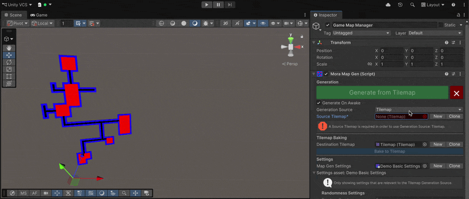
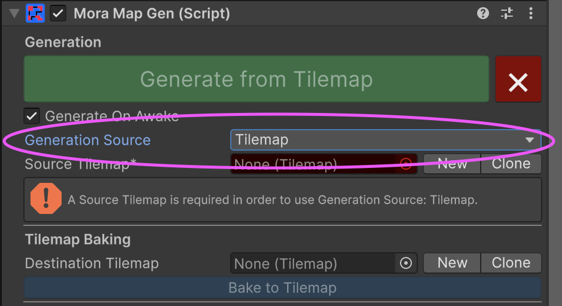
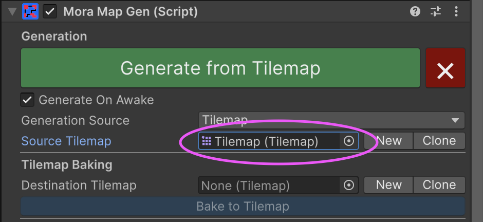
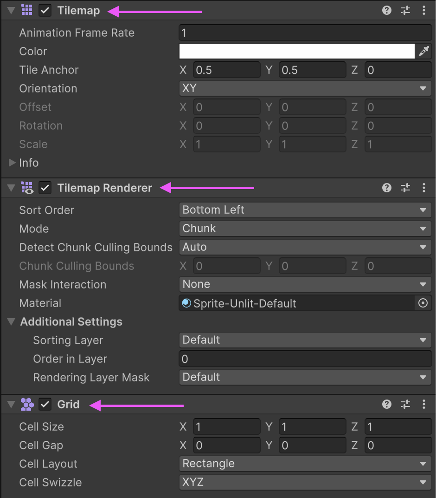
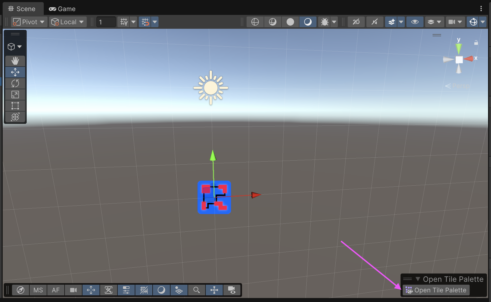
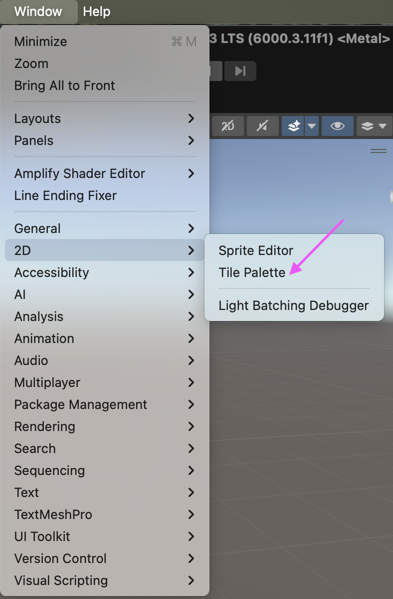
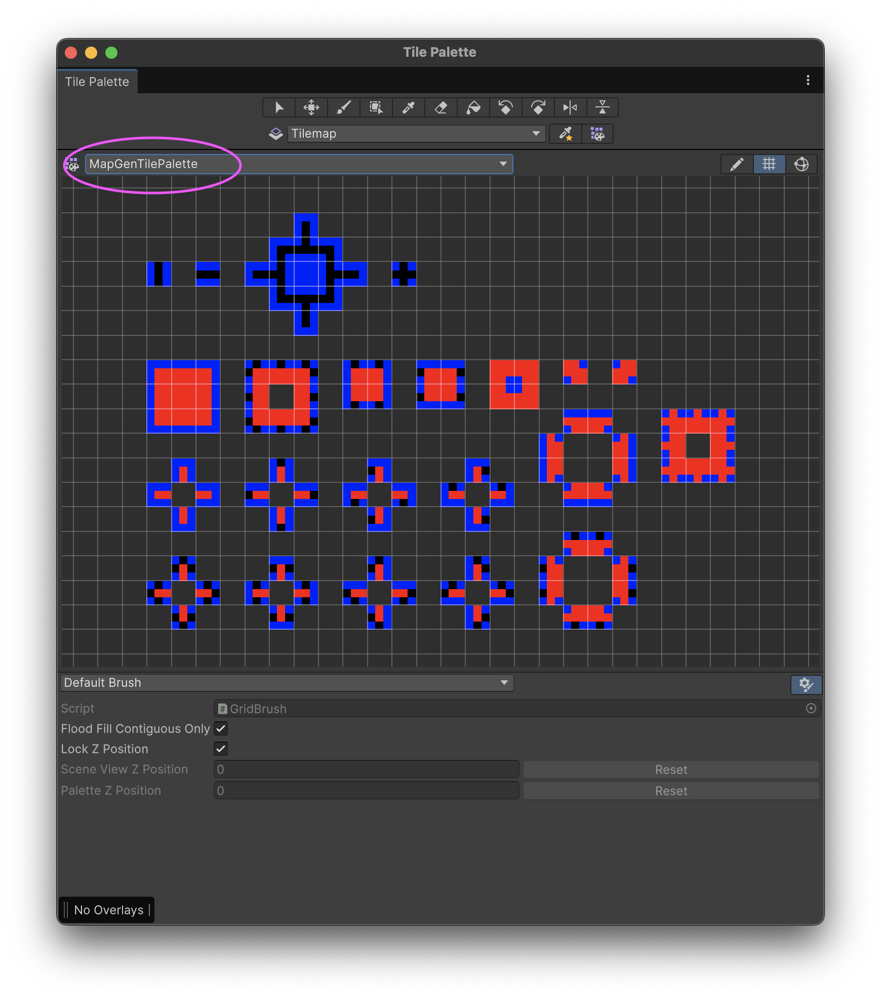
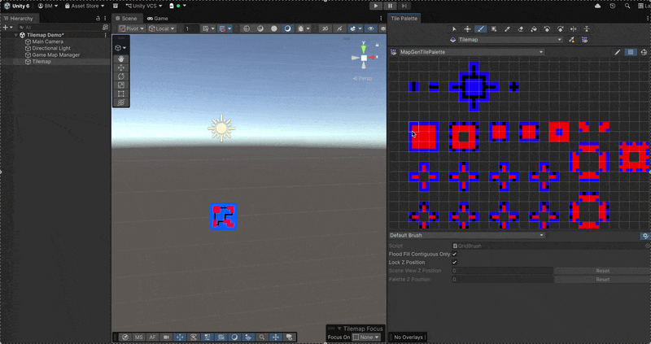
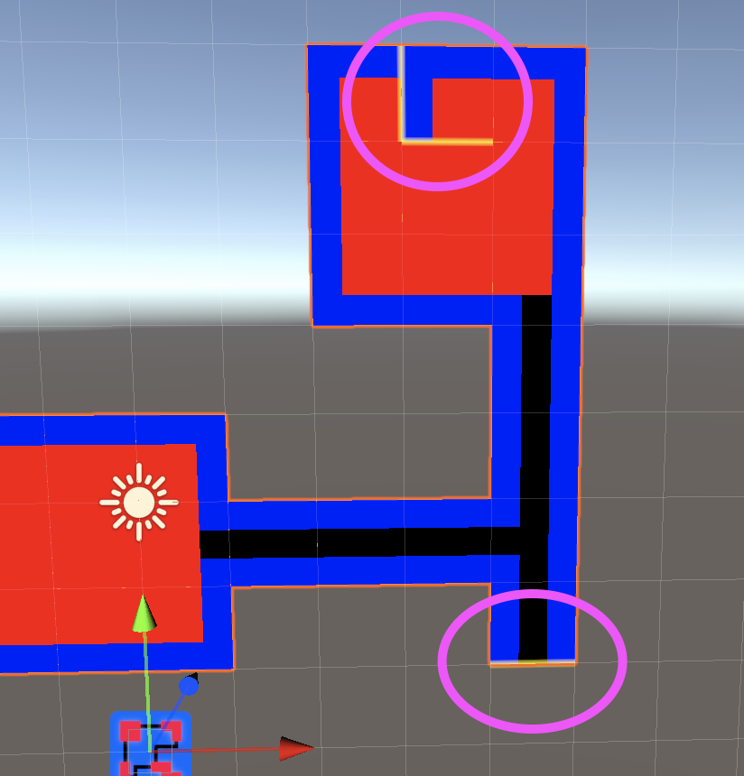
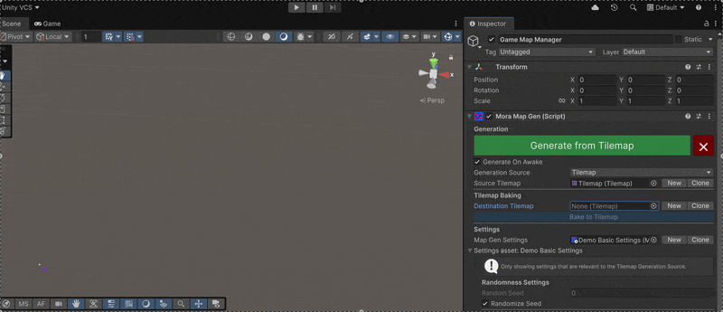

Generating from a Tilemap
As an alternative to the default procedural generation of a map layout, you can create the exact layout you want by using a Unity Tilemap.

Tip
I recommend you install Unity's Tilemap Editor package from the package manager, which makes it easy to edit your Tilemaps.
Generate from a tilemap:
1. Set the Generation Source to "Tilemap."

2. Assign a Source Tilemap

To create a new Tilemap you can either:
Click the "New" button next to the "Source Tilemap" field
or
add a new empty GameObject to your scene and add a Tilemap, TilemapRenderer, and Grid component to the object, and set it as the Source Tilemap.

3. Create your Tilemap Design
You can design your Tilemap layout either by manually painting tiles, or bake a generated layout to the Tilemap to use as a starting point.
Creating a Layout Manually
- With your empty Tilemap selected, click on the "Open Tile Palette" button:

If you don't see that overlay button, you can also open it from the menu "Window/2D/Tile Palette":

- In the Tile Palette window, select the "MapGenTilePalette" if it is not already the active one:

- Start painting tiles!

Select tiles from the palette and start adding them to your tilemap to create the layout you want.
Invalid or incomplete edges will be highlighted in yellow. Make sure there are no yellow edges anywhere to ensure a perfectly valid map is generated:

Corridors should always either connect to a room, or be capped off with a dead-end tile.
Baking a Generated Layout to a Tilemap
Instead of creating a layout from scratch, you can use procedural generation to create one to use as a starting point.

- Switch Generation Source back to "Procedural."
- Generate a map using your desired settings.
- Assign a Destination Tilemap.
- Click "Bake to Tilemap"
Then you are ready to make any manual edits to the layout that you wish.
4. Click "Generate from Tilemap"
Once your Tilemap layout is ready, switch Generation Source back to "Tilemap" and click "Generate from Tilemap."